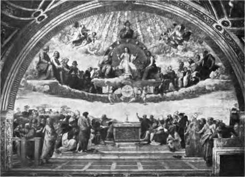

Encaustic Painting. Part 4
Description
This section is from the book "Mural Painting", by F. Hamilton Jackson. Also available from Amazon: Mural Painting: -1904.
Encaustic Painting. Part 4
The process has attracted a great deal of interest in France, and several painters made exhaustive experiments with various forms of wax mediums and published the results. Of these the most complete was Paillot de Montabert's, whose process was used, with some modifications, by Hip. Flandrin, in his beautiful paintings in the church of S, Vincent de Paul in Paris, and elsewhere. The mastic used on the Dome of the Pantheon, Paris, was made of two parts boiled linseed oil and one part wax. " Warm the oil with powdered litharge for several hours, stirring the mixture from time to time. Then pour off the clear oil, melt the wax and add the oil, keeping the heat up till it is quietly boiling. Steam arises at first, which makes it appear to boil. Let the mastic cool and it will keep indefinitely." To apply it, and make it penetrate the stone on which the painting is to be done, the surface has to be warmed with a portable stove. When it is very dry and warm the mastic is applied, warm also, with a stiff brush, more being added till it ceases to sink in; a further warming causes the mastic on the surface to disappear. The medium used was thus made:—
Virgin wax, perfectly pure . . one part. Volatile oil or essence of lavender spike one part. Pure felemi resin . l-16th of the spike oil.
Sometimes oil of wax and copal resin were added, according as the medium was required softer or more unctuous.*
The preparation is begun by softening the wax on the fire as well as the resins, if they are not already dissolved in the spirit and concentrated to the thickness of oils; then the spirit is poured in and the dissolving is hastened by stirring. With this medium the colours are ground; each colour requires a different amount of wax—experience shows how much. As the spirit evaporates more must be added, so that .the colours may be equally liquid. A little oil (not more than one-fourth of the spirit) may be added without making the surface shiny. De Montabert also invented a wax varnish which could be used on water-colour paintings. He took wax which was softened over the fire, three or four drops of spike oil being added when the pot was taken off the fire. To the wax thus softened and divided some spoonfuls of well rectified spirits of wine were added, which boiled and evaporated quickly. Then more was added and the wax stirred, after which it divided into flakes while cooling. It was then well beaten with a spatula, with the addition of warm spirits of wine from time to time, and shaken at intervals. The wax divided and liquefied, forming an emulsion. With the addition of water and grinding with a muller a milk of wax was obtained, which was strained through crape or gauze and spread over the picture with a broad close badger left a dust of wax all over the surface when dry, which had only to be warmed and polished to give the effect of a varnish.
* To prepare oil of wax you take yellow wax and unslaked lime in equal parts, melt them together in a basin so as to make pellets, put these pellets into a retort of stone-ware, place this into a reverberating furnace, and warm it by degrees tiU red. First a few drops of water pass, and then the volatile oil. There are generally seven or eight ounces to each pound of wax. The first products of distillation are least charged with the smell of scorching. By redistilling the liquor becomes almost colourless".
The preparation of the wall at S. Vincent de Paul is described elaborately by M. Hittorff, who was the architect, but the paintings were not worked strictly according to rule. The wall was first well looked over, the joints filled up, and any doubtful places cut out and replaced. It was then well dusted and brushed over with a thin coat of perchloride of mercury (50 grammes to 8 litres of water), to destroy any vegetation which might have grown on plaster or stone. It was then warmed and dried with a portable furnace, not less than one foot from the wall, and made so hot that the hand could not touch it. It was then flooded with a gluten applied with a stiff brush till the wall would not absorb more, while the furnace was warming the next piece, and while still a little warm a first coat of colour was laid. The gluten was thus composed:—
One part by weight of wax. | ||
9t 99 | it | essence of turpentine. |
99 99 | it | linseed oil |
99 99 | it | Venice turpentine. |
99 99 | ii | thin amber varnish. |
Half „ | tt | „ white pitch. |
Eighth „ | litharge. | |
it it | ii | metallic soap. |
All these substances, except the metallic soap, were put together into a cauldron on a specially made furnace.
THE DISPUTA DEL SACRAMENTO.
Fresco by Haffaelle, in the Camera delta Segnatura, in the Vatican.
After applying this priming without any liquid it was with hermetically sealed opening so that the vapours should not catch light. When all was melted it was kept warm for half an hour, being stirred all the time with a spatula. The metallic soap was also dissolved over the fire in three times its weight of linseed oil and spirits of turpentine. The cauldrons were then taken off the fire and placed far away from each other; when they had cooled a little the soap was poured little by little into the other cauldron, which was only half full because the effervescence is very great. As to the metallic soap it is made by a saturated solution of protoxide of iron, poured little by little into a concentrated solution of ordinary soap. Stirring these substances together with a wooden spoon a precipitate is formed; this is washed carefully until the water of washing only leaves a slight remainder.
The colour for priming was white lead with a t&nth of its weight of bioxide of lead, mixed with a gluten thus made:—
Wax . ... one part.
Spirits of turpentine . • two parts.
Continue to: